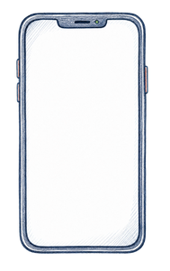
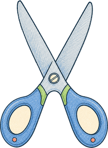

CapCut 是什麼
CapCut（剪映國際版）是字節跳動出的剪輯軟體，手機和電腦都能用，介面有完整繁體中文，是目前最適合醫療人員入門的剪輯工具。
基礎剪輯功能全部免費，不用訂閱就能做出完整的衛教短影片。
選單、教學、社群資源都有繁體中文，不用先學一堆英文剪輯術語。

跨平台手機隨手剪、電腦版做細部調整，專案可以同步接續編輯。
自動字幕、文字轉語音、智慧去背，不用另外裝外掛或學特效軟體。
免費版 vs Pro
📅 資訊更新於 2026 年 7 月 — 以官方公告為準。CapCut 定價依國家/地區顯示幣別可能不同，實際金額請以 App 內顯示為準。
| 方案 | 價格（約） | 匯出畫質 | 浮水印 | 適合對象 |
|---|---|---|---|---|
| 免費 | $0 | 1080p | 一般匯出不含浮水印 | 個人學習、偶爾製作衛教內容 |
| 付費方案（Standard／Pro） | 約每月 $9.99 起 | 4K | 無 | 頻繁產出、需要更多素材庫與 AI 功能 |
介面導覽
打開 CapCut 電腦版，畫面主要分成四塊，先認識這幾個區域，之後操作會順很多。
畫面下方，橫向排列所有素材片段。左右拖曳可以調整片段順序和長度，是剪輯時最主要的操作區。
時間軸上下堆疊的每一列。一軌放影片、一軌放字幕、一軌放背景音樂，互不干擾，最後疊在一起輸出。
左側面板，管理你匯入的圖片、影片、音檔。也能在這裡搜尋 CapCut 內建的免費音樂、音效、貼圖。
上方工具列，切換不同功能分頁：文字、貼圖、特效、轉場、濾鏡。選好素材後點對應分頁即可加到時間軸。
基礎剪輯流程
不管做什麼類型的影片，CapCut 的基本流程都是這六步：
把 AI 生成的圖片/影片、拍攝的照片、語音檔全部拖進素材庫，再依需求拉到時間軸上。
先把片段排好順序、剪掉不要的部分，抓出大致的長度和節奏，不用急著做細節調整。
片段之間點兩下加轉場效果。衛教影片建議只用「淡入淡出」，花俏轉場反而分散注意力。
用自動字幕功能從語音產生文字軌，再手動校對錯字和斷句（詳見下方 AI 功能章節）。
從內建免費音樂庫選一首輕柔的背景音樂，音量調低（不要蓋過旁白），淡入淡出收尾。
確認解析度和比例（直式/橫式），點匯出，等待轉檔完成即可上傳到社群平台。
AI 功能
CapCut 內建幾個 AI 功能，可以省下大量手動操作的時間。以下用保守的方式描述功能範圍，實際效果請以 App 內實測為準。
從語音自動辨識生成文字軌，中文辨識已可用，但複雜語句或專有名詞仍需手動校對。若需要繁體字幕，建議先確認辨識結果的字體形式，必要時手動轉換或校正。
把文字腳本直接轉成語音旁白，內建多種語音角色，適合不想自己錄音的情況。

智慧去背自動辨識人像/物件邊緣做去背合成，不需要綠幕，適合把講者疊到衛教插圖背景上。
一鍵調整色調、消除環境噪音，讓手機拍攝的素材看起來更專業。
衛教短影片工作流
銜接本站 Part 5 — AI 影片製作 和 Part 6 — Google Flow 實戰：前面用 AI 生成素材，最後一步就是進 CapCut 組裝成片。這也是 Google Flow 章節最後一步 Step 5 的展開版。
- AI 生成素材（Flow / ChatGPT） — 分鏡插圖、圖轉影片片段、旁白語音，全部先在 AI 工具端做好
- 匯入 CapCut — 把所有素材依腳本順序拖進時間軸
- 對齊時間軸 — 讓畫面切換的時間點對上旁白的斷句
- 加字幕與配樂 — 自動字幕 + 手動校對，選一首輕柔配樂
- 整體檢查 — 從頭到尾看一遍，確認字幕、發音、畫面都正確無誤
- 匯出 — 依平台需求選擇比例和解析度
匯出與注意事項
解析度建議
- Instagram Reels / YouTube Shorts — 直式 1080×1920（9:16）
- YouTube 一般影片 — 橫式 1920×1080（16:9）
- 幀率 — 30fps 對衛教內容已經足夠流暢
- 影片畫面、病歷截圖、檢查影像中不可出現任何可辨識病人身分的資訊（臉部、姓名、病歷號、就診日期等），即使只是背景一閃而過也要剪掉
- 使用 AI 生成的素材或背景音樂前，確認授權範圍允許商用／公開發布
- 若要在機構官方帳號發布，先確認符合所屬單位的社群發文與衛教內容審核規範